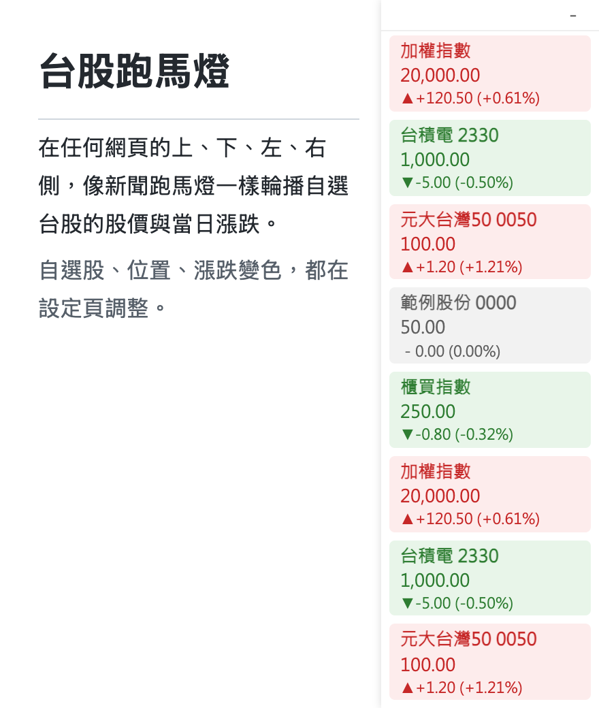
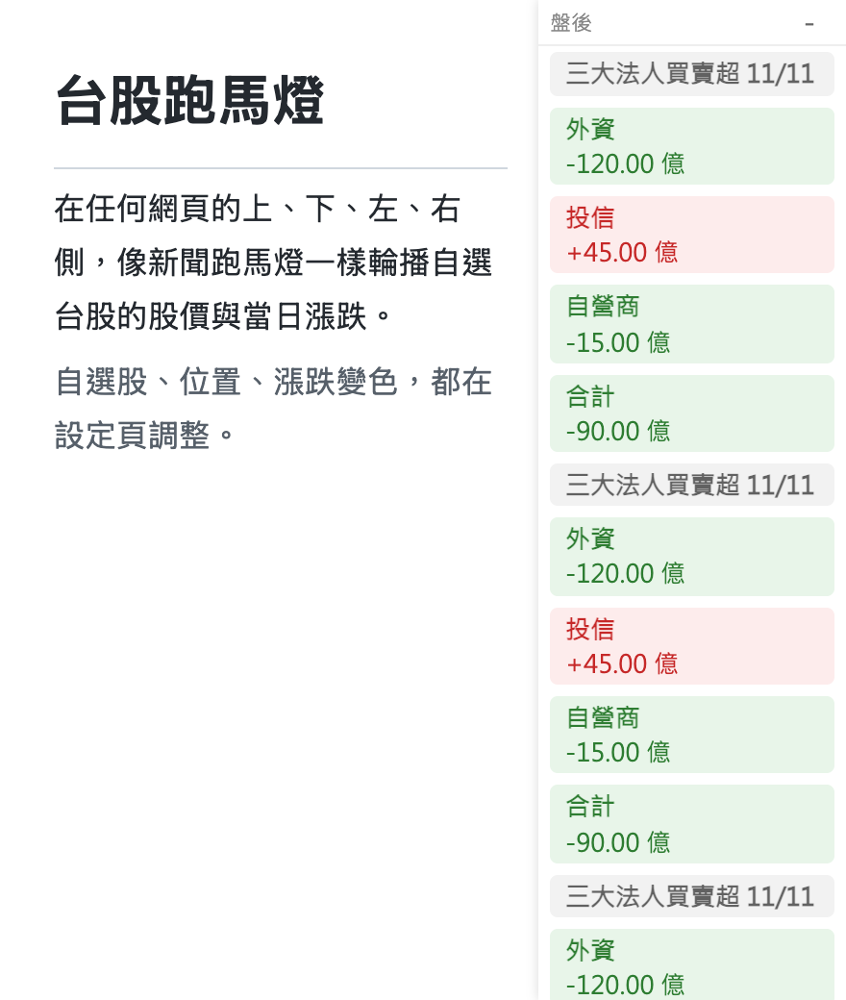

一個交易日，跑馬燈這樣變
盤後模式預設開啟，可在設定頁關閉。
| 時段 | 跑馬燈顯示 |
|---|---|
| 平日 09:00 至 13:35 | 股價跑馬燈，每 1 分鐘更新 |
| 13:35 收盤後 | 跑馬燈自動隱藏 |
| 約 15:00 至 16:30 | 證交所公布當日三大法人買賣金額後，顯示外資、投信、自營商與合計的買賣超 |
| 隔天開盤 | 自動恢復股價 |
| 週末與休市日 | 不受影響，標示「收盤」並顯示上一個交易日的收盤價 |
不想隱藏跑馬燈的話，關閉盤後模式，收盤後仍會顯示當天收盤價。

邊緣多一條安靜的行情列
不改變你原本的瀏覽方式。
-
模糊搜尋自選股
輸入名稱或代號即可，例如「台積」、「元大50」、「2330」。支援上市、上櫃、ETF、加權指數與櫃買指數。
-
四個位置任選
放在畫面上方、下方做橫向捲動，或放在左、右側做直向窄欄，避開你正在看的內容。
-
紅漲綠跌，可切換
預設採台股慣例（紅漲綠跌），也能切成美股慣例。漲跌色號可以自訂，並以箭頭輔助辨識。
-
整頁淡色濾鏡
依加權指數漲跌，替整個網頁蓋上一層淡淡的色調，不用看數字也知道今天盤勢。預設關閉。
-
防窺模式
平時完全隱藏，滑鼠移到跑馬燈所在的畫面邊緣才滑出，移開 0.5 秒後自動收起。預設關閉。
-
排除、暫停、最小化
可指定不顯示的網站（預設排除 YouTube、Netflix）。滑鼠移上去暫停，也能一鍵最小化，所有分頁同步。
四個步驟開始看盤
安裝完成後，照著做就好。
-
跟著新手教學走一遍
安裝完成會自動開啟新手教學頁，用互動示範帶你認識跑馬燈的操作。
-
點工具列圖示開啟設定
找不到圖示時，點瀏覽器右上角的拼圖圖示，再按圖釘把「台股跑馬燈」釘選到工具列。
-
加入你的自選股
在設定頁搜尋名稱或代號後加入。清單載入失敗時，直接輸入代號再按 Enter 也能加入。
-
調整位置與外觀
選擇跑馬燈位置、紅綠配色、捲動速度，需要時再開啟防窺模式或整頁濾鏡。
三步裝進 Chrome
目前尚未上架 Chrome 線上應用程式商店，請依下列步驟以開發人員模式安裝。
需以開發人員模式手動安裝，約 1 分鐘完成。原始碼公開在 GitHub。
安裝前就已經開著的分頁，需要重新整理一次才會出現跑馬燈。
-
下載並解壓縮
下載 zip 後解壓縮，記住解壓縮後的資料夾位置，之後不要刪除它。
下載 tw-stock-ticker.zip -
開啟擴充功能管理頁
在網址列輸入下方網址，並打開右上角的「開發人員模式」。基於瀏覽器限制，這個網址無法直接點擊開啟。
chrome://extensions -
載入未封裝項目
按「載入未封裝項目」，選擇剛才解壓縮的資料夾（裡面直接有
manifest.json的那一層）。完成後會自動開啟新手教學頁。
常見問題
行情有多即時？
資料來自證交所 MIS 的非官方介面，本身約有 5 秒延遲；擴充功能每 1 分鐘更新一次（僅盤中），不是逐筆即時。跑馬燈右側會顯示最後更新時間。
收盤後或沒開盤的時候會顯示什麼？
開啟盤後模式（預設開啟）時，平日 13:35 收盤後跑馬燈會先隱藏，等證交所公布當日三大法人買賣金額後，改顯示外資、投信、自營商與合計的買賣超，隔天開盤自動恢復股價。週末、盤前與休市日不受影響，跑馬燈會標示「收盤」，價格是上一個交易日的收盤價。關閉盤後模式的話，收盤後仍會顯示當天收盤價。
為什麼有些頁面看不到跑馬燈？
chrome:// 頁面、Chrome 線上應用程式商店與內建 PDF 檢視器，Chrome 不允許擴充功能注入，這是瀏覽器的限制。此外，YouTube、Netflix 預設在排除名單內，可以到設定頁修改。
會蒐集我的瀏覽資料嗎？
不會。擴充功能不蒐集、不上傳你的瀏覽紀錄。它只向證交所、櫃買中心取得行情與股票清單，設定則存放在 Chrome 的儲存空間（同步設定會跟著你的 Google 帳號）。完整原始碼公開，歡迎自行檢視。
為什麼需要「讀取所有網站」的權限？
因為跑馬燈要畫在你開啟的每一個網頁上，Chrome 會把這種做法顯示為可存取所有網站。擴充功能只會在頁面上加一條跑馬燈，不會讀取頁面上的文字或表單內容。
這是投資建議嗎？
不是。本工具僅提供行情顯示，資料可能延遲或有誤，請以券商與交易所公告為準，投資決策與風險由使用者自行負責。